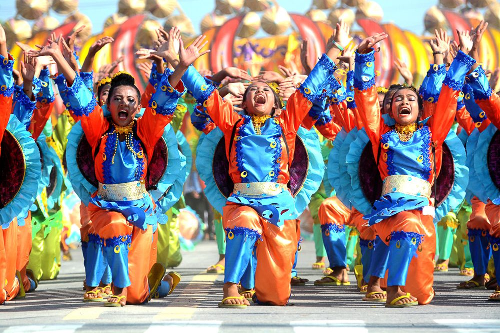
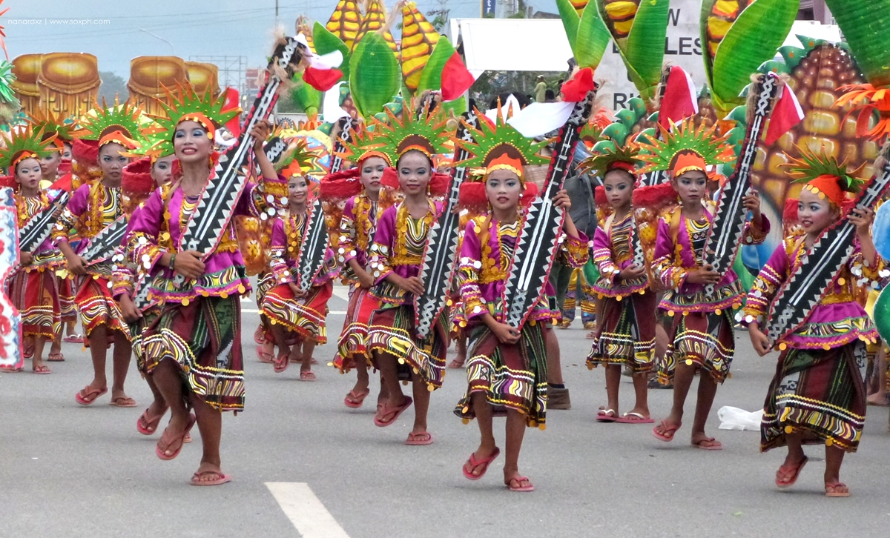

Location: Tacurong City, Sultan Kudarat
Talakudong comes from the historical word "Kudong", a native headgear worn by early settlers. This festival features a highly energized street dancing competition where performers exhibit colorful and intricately styled golden hats.

Location: Isulan, Sultan Kudarat
Kalimudan is a tribal word signifying a joyful gathering of tribal leaders and community forces. It acts as the official founding anniversary celebration of the province.